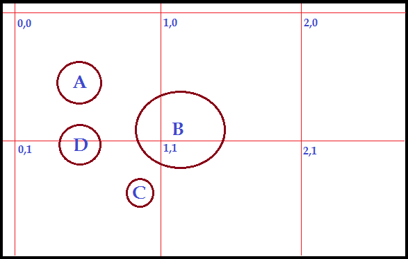
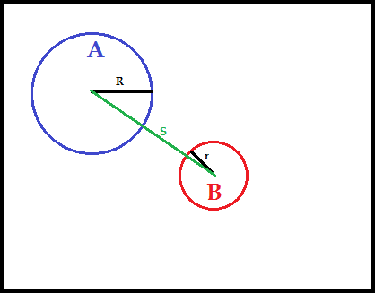
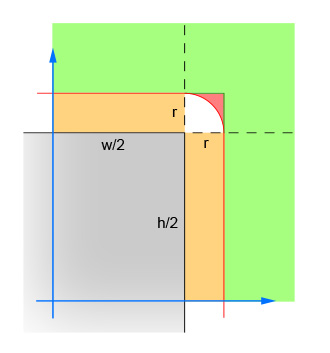

Last Circle
After the school year ended, I decided to make a game over the summer. It presented quite a few interesting programming challenges which I will make note of in this article. I drew all of the art and animations myself which also gave me a lot of respect for just how time-consuming making a game really is. I spent over a dozen hours drawing just a handful of basic sprites!
I ended up using the built-in GUI framework Java.AWT for all the graphics-drawing instead of something more complex like OpenGL. This project was not meant to be flashy, so the .awt framework ended up meeting my needs. Below is a short clip of the game in action. The player controls a blue-turqoise octogon by moving and shooting in the cardinal directions(N, S, W, E). Movement in intercardinal directions(NE,NW,SE,SW) is also possible if the player moves holds down the two buttons at once. The goal is to survive as long as possible. Each enemy destroyed is worth 5 points.
The spawn interval begins at 5 seconds and slightly increases as the player's score increases. I wanted to create the feeling that the player was being slowly overwhelmed. I kept track of the enemies in a LinkedList structure and added and removed from it as enemies spawned or were destroyed.
This ended up being an inefficient approach due to the fact that the game was checking was for a ton of collisions at each tick. The game attempts to check for collisions between each creature, wall entity, player and bullet projectile at each tick (60 times per second!). Obviously this was not going to work if I wanted to have dozens of enemies on the field at once, or have the player shoot a lot of projectiles.
Optimizing Collision Detection
There are ways to optimize collision detection. I ended up breaking the world up into small square regions, and only perform collision checks on entities that exist in the the same regions:
In this diagram we would first sort the four entities into seperate lists for each region, then we would go through and only check for collisions for each region. For region (0,0) that would be entities A, B, and D. For region (0,1), that would be entities B, C, and D.
With this method, we eliminate a lot of checks between objects that are too far apart to collide. It also gives us a nice way to track the presence of entities in any particular area on the game field (I used this data to prevent enemies from spawning on top of each other)
At a minimum, we are still going to have to iterate through all of the entities in the game i.e. If there are N entities, we are going to have to sort N items. Afterward we perform a collision check on all neighboring entities. Worst case, this still represents O(N^2) complexity. However, if we prevent enemies from moving thorugh each other, the maximum amount of compares is actually quite small. I used a region size of 64x64 pixels. Since the sizes of my entities were 16x16, 32x32 and 64x64 pixels, it was impossible for more than 8 enemies to occupy the same cell.
I eventually found out that there other better ways to check for collisions between objects. Check out this video that uses the quad tree data structure to
Calculating Collisions Between Circlular Entities
Most of the entities in this game were some form of circle, which is great because checking for collisions between entities is simple. If two circles A and B have radii R and r respectively then all we have to do is check that their relative separation distance, S, is greater than the sum of their two radii. In other words,
We can optimize this calculation by simply squaring both sides of the equation. This way, we avoid having to use the more expensive square root operation
Calculating Collisions Between Rectangular and Circular Objects
Calculating collisions between circles and rectanlge is a bit more complicated. With circles, the bounds of the shape are constant; wherever you are arond the circle, the distance to the center is always the same (because the radius is a constant).
With a rectangle, the distance from the center to the edge of the rectangle depends on your position relative to the center, so we have to do a little more math. The function below descibes a way of checking for a collision between a rectangular shape(with known height, width, position) and a circular entity(with known radius and position).
public boolean entityIntersectsRect(Rectanlge rect, Entity e){
double circleDistanceX = Math.abs(e.getCenterX() - rect.getCenterX());
double circleDistanceY = Math.abs(e.getCenterY() - rect.getCenterY());
if(circleDistanceX > (e.getRadius() + rect.getWidth()/2)) {return false;}
if(circleDistanceY > (e.getRadius() + rect.getHeight()/2)) {return false;}
if(circleDistanceX < (e.getRadius() + rect.getWidth()/2)) {return true;}
if(circleDistanceY < (e.getRadius() + rect.getHeight()/2)) {return true;}
cornerSquareDistance = ((circleDistanceX - rect.getWidth()/2)^2 +
(circleDistanceY - rect.getHeight()/2)^2)
return (cornerSquareDistance <= e.getRadius()^2);
Here's how it works:
-
1. The first two lines calculate the distance between the center of the circle and center of the rectangle in component x, y form.
-
2. The second two lines check for the "easy case" where a collision is impossible because the relative distance is greater than the radius of the circle and the maximum bounds of the rectangle. In the diagram, the corresponds to the circle being in the green region.
-
2. The next two lines check for the easy case where a collision is guranteeed because the rectangles bounds are greater than the separation distance. This corresponds to the grey and orange sections on the diagram.
- 3. The last lines compute the more difficult case where the circle can intersect the corner of the rectanlge. It accomplishes this by calculating the distance of the center of the circle to the edge of the rectangle and then comparing this to the radius of the circle. If the radius is larger than this distance, then the function returns false corresponding to circles in the red region, or true for circles who intersect the white region.
Animations, Sprites
The game animates entities by looping through an array of buffered images for each tick. By default, objects loop through this array indefinitely until some flag is given. For example, the player death flag switches the player animation to a death animation. For the sake of convenience, animations are composed of images that exist on larger image sheets. At run time, the game loads these sheets and crops them into their individual form. Here are some spritesheets for a some enemies in the game, and their animations.
The complete source code as well as a mac-friendly executable jar is available here. I'll eventually upload a windows-friendly version, but if you want it badly, go ahead and send me an email.